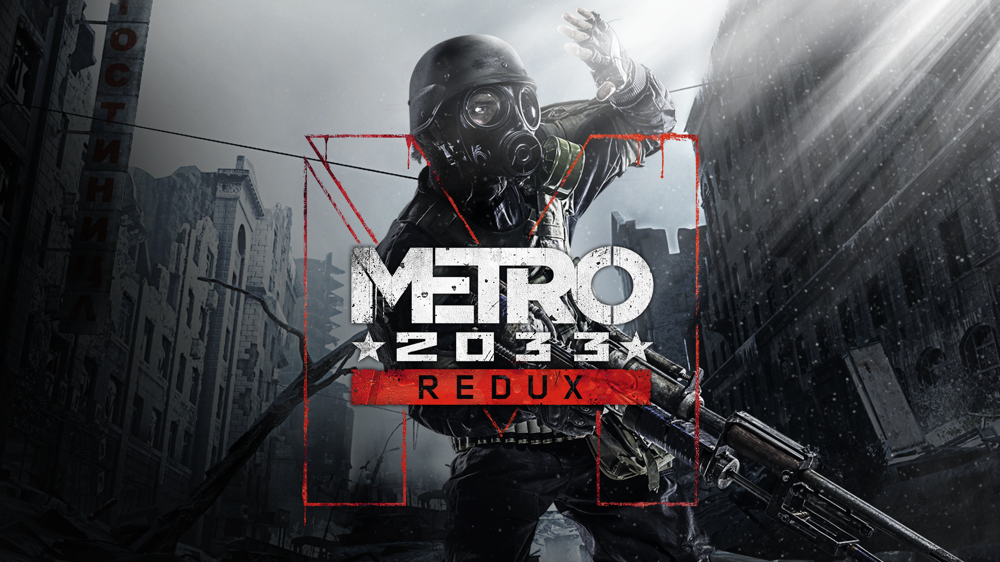

Успей приобрести!
Resident Evil 4 — культовая игра в жанре Survival Horror/Action, являющаяся одной из самых известных частей серии Resident Evil. Сюжет рассказывает о специальном агенте Леоне Кеннеди, отправленном в отдалённую европейскую деревню для спасения дочери президента США. Однако обычная миссия быстро превращается в настоящий кошмар — местные жители оказываются заражёнными опасным паразитом и готовы любой ценой остановить героя. Игроку предстоит исследовать мрачные локации, сражаться с жуткими монстрами, решать головоломки и постоянно бороться за выживание. В игре присутствует напряжённая атмосфера, ограниченные ресурсы и динамичные перестрелки, благодаря которым Resident Evil 4 стала одной из лучших игр в истории жанра.

Metro 2033 — атмосферная игра в жанре Survival Horror/Action, созданная по мотивам одноимённого романа Дмитрия Глуховского. События разворачиваются в постапокалиптической Москве, где после ядерной войны выжившие люди были вынуждены укрыться в тоннелях метро. Игрок берёт на себя роль Артёма — молодого жителя одной из станций, которому предстоит отправиться в опасное путешествие через тёмные подземелья и разрушенную поверхность города. На пути героя встретятся мутанты, враждебные группировки и множество смертельных угроз. В игре присутствует мрачная атмосфера, постоянная нехватка патронов и ресурсов, а также напряжённые перестрелки и элементы скрытного прохождения, благодаря которым Metro 2033 стала одной из самых запоминающихся игр в жанре постапокалипсиса.

God of War — легендарная игра в жанре Action/Adventure, основанная на мифологии и эпических сражениях с богами и чудовищами. Главным героем выступает Кратос — могущественный спартанский воин, который после предательства богов становится безжалостным Призраком Спарты. Игроку предстоит путешествовать по огромному миру, наполненному опасными врагами, древними тайнами и масштабными битвами. В игре присутствуют зрелищные сражения, использование уникального оружия и магических способностей, а также глубокий сюжет, раскрывающий внутреннюю борьбу и прошлое главного героя. Каждая часть серии отличается кинематографичной подачей, мощной атмосферой и эпическими битвами, благодаря которым God of War считается одной из лучших игровых серий в истории индустрии.

The Witcher 3: Wild Hunt — культовая игра в жанре Action/RPG с огромным открытым миром, созданная по мотивам произведений Анджея Сапковского. Игрок берёт на себя роль ведьмака Геральта из Ривии — профессионального охотника на чудовищ, обладающего сверхчеловеческими способностями и мастерством владения мечом. Главному герою предстоит отправиться в опасное путешествие по разрушенному войной миру, чтобы найти Цири — девушку с невероятной силой, за которой охотится таинственная Дикая Охота. В игре присутствует огромный открытый мир, наполненный городами, деревнями, монстрами и множеством побочных заданий, каждое из которых влияет на дальнейшее развитие сюжета. Игрок может использовать магические знаки, алхимию и различные стили боя, сражаясь как с людьми, так и с опасными чудовищами. Благодаря глубокому сюжету, проработанным персонажам и невероятной атмосфере The Witcher 3: Wild Hunt считается одной из лучших RPG в истории игровой индустрии.